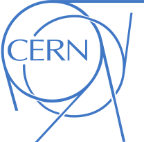
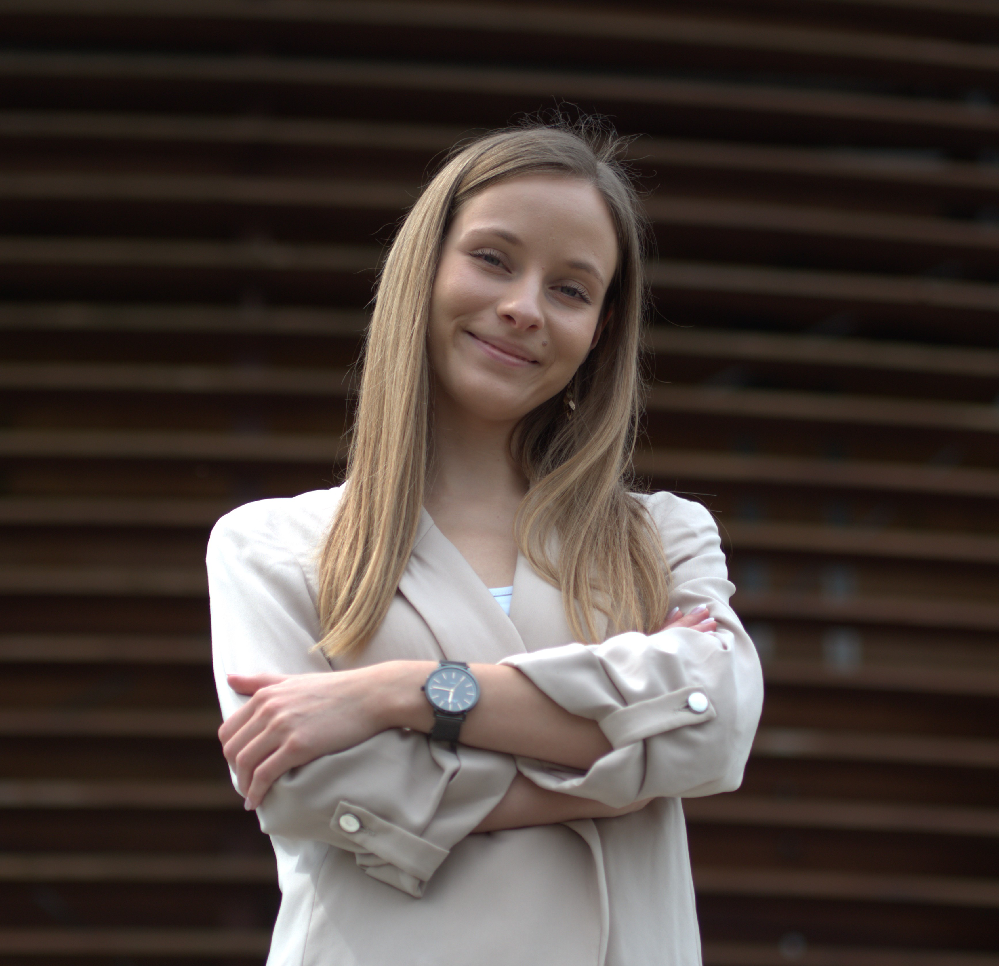
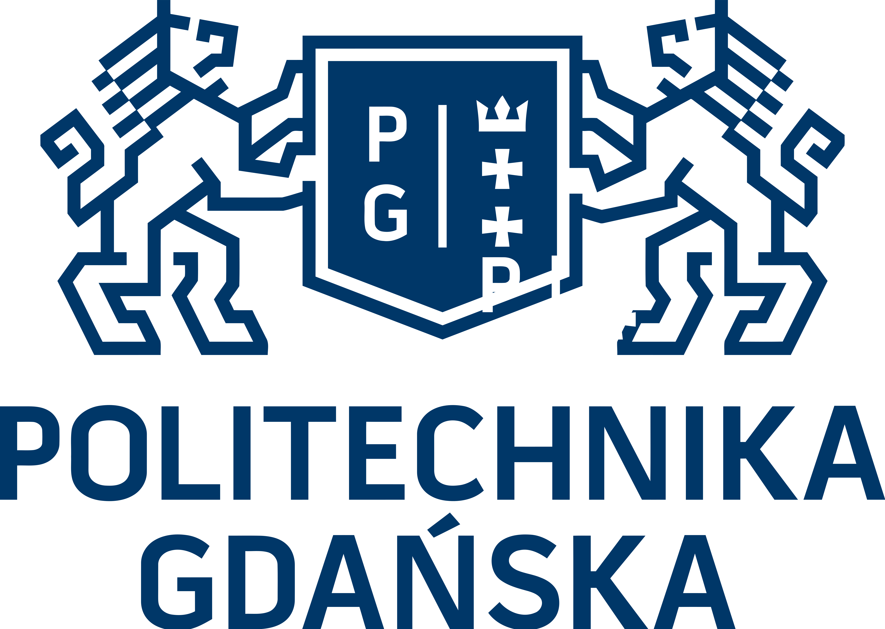

CERN - European Organization for Nuclear Research
Current workplace
Weronika Król
MIT Master of Finance Admit | CERN Data & Reporting Specialist
I come from a village of 70 residents in Poland's Kuyavian-Pomeranian region. From there, I built my path through Gdańsk University of Technology and CERN, toward an opportunity I once saw as out of reach: admission to MIT.
Today I work at CERN at the intersection of analytics, reporting, business impact, and community-building. After the MIT Master of Finance, I want to return to Poland and help students, professionals, and smaller organizations use finance, data, and AI more confidently and more practically.
Admissions story
I received offers from MIT, Imperial College London, and Columbia University in 2025, but financial constraints prevented me from enrolling. In 2026, I was admitted to the same three institutions again.

Organizations

CERN - European Organization for Nuclear Research
Current workplace

Gdańsk University of Technology
BSc alma mater
T-Mobile Deutsche Telekom
Former role

Massachusetts Institute of Technology
Upcoming study destination
Vision
I want to return to Poland with strong international training and practical experience, then use both in ways that matter beyond a classroom or corporate office. My goal is to make finance easier to understand, data more useful in everyday decisions, and technology more practical for people and institutions that are often left behind.
Financial education
Help students and citizens better understand finance and make informed, confident decisions.
Turning ideas into action
Encourage young people to build, experiment, and create value instead of staying on the sidelines.
AI for small businesses
Help bring practical AI tools to small firms and individuals so innovation is not limited to large institutions.
Impact
Education
Gdańsk University of Technology
BSc in Data Engineering
Recognition
Admissions to MIT, Imperial, and Columbia
Accepted to three world-leading institutions across two consecutive admissions cycles, reflecting academic consistency and strong international competitiveness.
President of Mentoring@CERN & Women in Tech Steering Committee Member
Nominated to both roles as an outstanding woman at CERN, leading the Mentoring@CERN programme and contributing to the Women in Technology Steering Committee.
Imperial Female Future Leader Award
Recognized for leadership potential, initiative, and the ability to combine academic ambition with broader social impact.
Perspektywy Women in Tech speaker
Invited twice to speak at one of Europe's largest conferences for women in technology.
Big Data - Big Challenges 2024 participant
Selected for a competitive mentoring programme combining leadership development with real-world data challenges.
Golden Badge Award
Awarded in recognition of graduating among the top 2% of students in the faculty.
Rector's Scholarship for top students
Awarded for outstanding academic performance and ranking among the top students in the faculty.
Intel New Technologies for Women scholar
Ranked in the top 25 among roughly 5,000 female STEM candidates in Poland.
Community
2025–Present
President, Mentoring@CERN Programme
Lead an open mentoring programme for the wider CERN community, bringing together physicists, engineers, women in STEM, and other professionals across the organization, with 400+ mentees supported so far.
2024–2025
Co-organizer, CERN Mentoring Programme
Helped build and coordinate the programme before taking on the president role, strengthening its structure and delivery.
2023–2024
Volunteer, IT Girls Foundation
Supported initiatives encouraging girls and young women to pursue paths in technology and STEM.
2022–2024
CERN Guide and Alumni Third Collisions volunteer
Represented CERN to visitors and contributed to events that connect science more directly with people and alumni.
2022–2023
Mentor, Intel New Technologies for Women for Ukraine
Mentored participants in a programme supporting women and students affected by war.
Skills
Technical skills
Soft skills
Outside work
I love violin, salsa and bachata, hiking, paragliding, camping, and skiing.
Contact
If my story, work, and long-term vision resonate with you, I would be grateful to connect. I welcome conversations with individuals, institutions, and potential supporters who would like to help me continue this path.